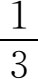

，
，1．数学是在哪里开始出现的
数学作为一门有组织的、独立的和理性的学科来说，在公元前600到前300年之间的古典希腊学者登场之前是不存在的。但在更早期的一些古代文明社会中已产生了数学的开端和萌芽。在这些原始文明社会中，有好些社会只能分辨一、二和许多，并没有更多的数学知识；有些则知道并且能够运算大的整数。还有一些能够把数作为抽象概念来认识，并采用特殊的字来代表个别的数，引入数的记号，甚至采用十、二十或五作为基底来表示较大的数量。也可以发现他们知道四则运算，不过仅限于小的数；并且具有分数的概念，不过只限于，

之类，而且是用文字表达的。此外，古人也认识到最简单的几何概念如直线、圆和角。也许值得一提的是，角的概念想必是从观察到人的大小腿（股）或上下臂之间形成的角而产生的，因为在大多数语言中，角的边常是用股或臂的字来代表的。例如在英文中，直角三角形的两边叫两臂。（在汉文中直角三角形的一条直角边也叫股。——译者）在这些原始文明中，数学的应用只限于简单交易，田地面积的粗略计算，陶器上的几何图案，织在布上的花格和记时等方面。在公元前3000年左右巴比伦和埃及的数学出现以前，人类在数学上没有取得更多的进展。由于原始人早在公元前一万年就开始定居在一个地区，建立家园，靠农牧业生活，可见最初等的数学迈出头几步是多么费时；更由于许许多多古代文明社会竟然没有什么数学可言，足见能培育出这门科学的文明是多么稀少。